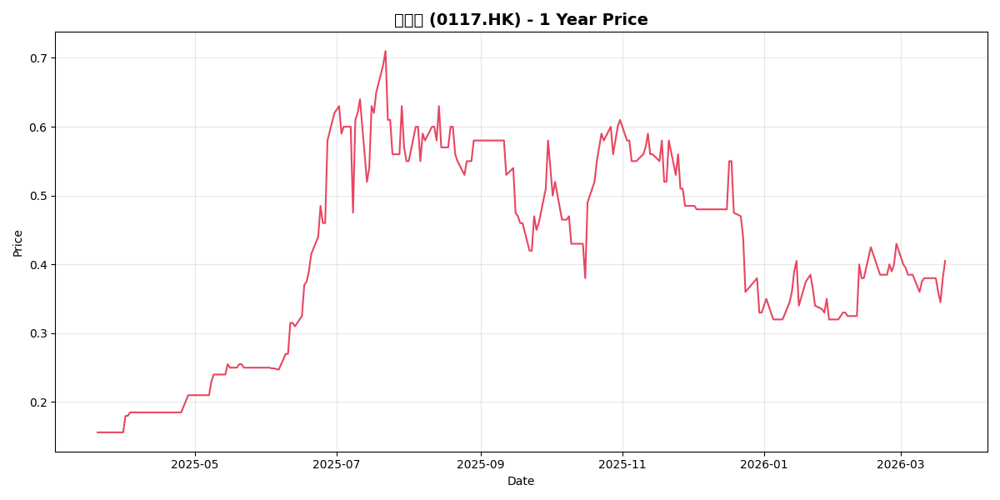

0117.HK

数据来源: Yahoo Finance | 过去52周周线走势
加科思是专注于肿瘤靶向治疗的创新药企，核心产品KRAS G12C抑制剂glecirasib已获批上市并纳入医保。与阿斯利康合作泛KRAS抑制剂，前景广阔。2026年预计扭亏为盈。
当前 HK$7.0 = 中性情景 DCF 的 64%。
加科思是KRAS靶点龙头，华兴证券目标价HK$11.3有61%上涨空间，2026年预计扭亏为盈。
| 财务指标 | 2024年 | 2025年 | 2026年 (预期) |
|---|---|---|---|
| 营业收入 (RMB) | 1.60亿 | 0.535亿 | ~6.27亿 |
| KRAS商业化收入 | - | 855万 (下半年) | 核心增长引擎 |
| 净利润状况 | 亏损 | 亏损收窄 | 首次扭亏为盈 |
| 期末现金及等价物 | ~10.7亿 | ~15.3亿 | > 20亿 (一季度) |
得益于阿斯利康(AstraZeneca) 1亿美元首付款的到账，加科思预计2026年第一季度末现金余额将突破人民币20亿元。这为公司提供了36个月以上的充裕现金跑道，足以支持其核心管线顺利推进至商业化放量及关键临床（Phase III）数据读出，大幅降低了短期内的股权融资稀释风险。
| 机构/平台 | 评级 | 目标价 (港元) | 核心逻辑 |
|---|---|---|---|
| 高盛 (Goldman Sachs) | 买入 (历史) | 19.14 | 研发管线价值被低估，充裕现金支持 |
| 华兴证券 | 强烈推荐 | 11.30 | 首款药商业化元年，BD加持盈利在望 |
| 一致预期 (Consensus) | 买入 | 9.64 - 10.86 | 海外授权落地，消除资金担忧 |
*注：当前股价(0.41)与目标价差异极大，可能受拆股、流动性折价或市场情绪错杀影响。
数据来源：财务数据来源于公司年报及季度报告；估值指标基于2026年3月20日收盘价计算；盈利预测来源于华兴证券、高盛等机构一致预期。
以上分析仅供研究参考，不构成投资建议。投资有风险，请结合自身风险承受能力做决策。